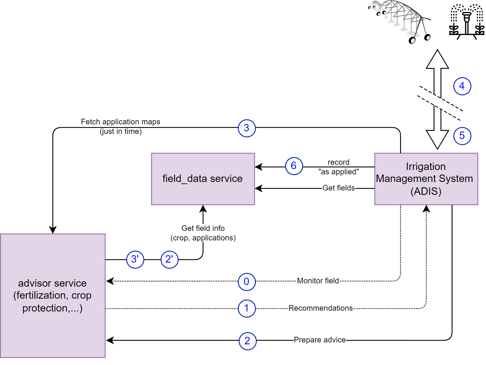
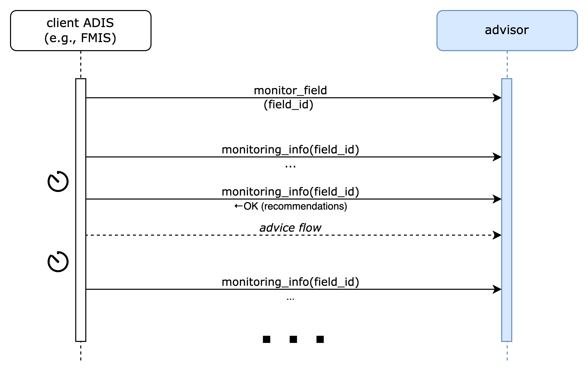
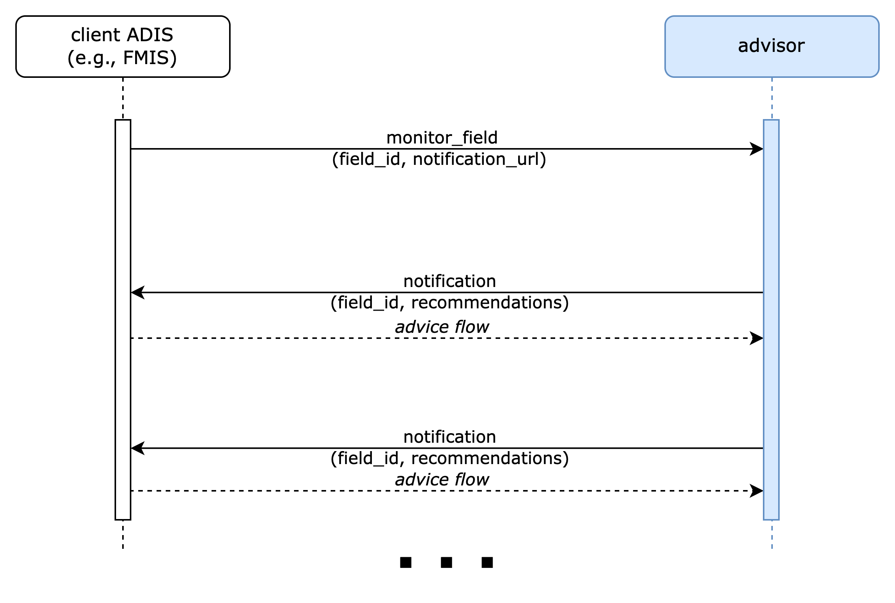

The "irrigation_advisor" ATLAS Service Template
Abstract
This document describes the specifications for irrigation_advisor services whose purpose is to provide an irrigation map for a selected field. irrigation_advisor services are not obligated to take into consideration the water supply system infrastructure (main and lateral pipelines or canals etc.) or the equipment that will implement the suggested irrigation (drip, sprinkler, micro-sprinkler etc.), but that's not prohibit individual implementations to include such inputs. They may be based on soil water balance equations and/or crop models of varying complexity levels (from empirical to mechanistic), that are fed with data related to plant-soil-atmosphere-water continuum and derive estimations of the required net irrigation amount. The latter can be used successively by an irrigation management application vendor.
1 Introduction
Shortage of plant available water may strongly reduce crop yield or cause crop production failure. Thus, in certain regions and for certain cultivations, irrigation is essential to achieve optimum crop yield. However, the “when” and “how much” to irrigate may vary significantly depending on crop variety, soil characteristics, local weather conditions, and on the existing soil water amount available for the plant.
An irrigation_advisor service may (a) recommends when a selected field should be irrigated (see 9.2 Field Monitoring) and (b) determines the amount of water that should be applied on the field in order to maintain the water levels within root zone in satisfactory levels. This amount should not be miss-interpreted as the water needed to refill root zone back to field capacity. The satisfactory levels may vary significantly depending on crop type, crop different growing stages, or the implemented by the ATLAS-enabled Digital Information System (ADIS) irrigation strategie e.g., "no-water-stress", "regulated-mild water stress", "regulated-severe water stress", "sustained water stress" etc.
Farmers may use different irrigation_advisor implementations depending on the accuracy they want to achieve, their budget, or the availability of ancillary data.
2 Terminology
The key words "MUST", "MUST NOT", "REQUIRED", "SHALL", "SHALL NOT", "SHOULD", "SHOULD NOT", "RECOMMENDED", "NOT RECOMMENDED", "MAY", and "OPTIONAL" in this document are to be interpreted as described in RFC 2119 and indicate requirement levels for compliant implementations.
The notation "[xxx]" (xxx in square brackets) is equivalent to "array of xxx".
When used alone, the term "irrigation_advisor" refers to "irrigation_advisor ATLAS Service Template". Instead, "irrigation_advisor service" is equivalent to "an ATLAS Service implementing the irrigation_advisor ATLAS Service Template".
3 Pre-requisites
A thorough understanding in the following is required for
both service consumers or service provider implementors:
- GeoJSON specifications (https://geojson.org/)
- GeoPackage specifications (https://www.geopackage.org/)
4 The Advisor Lifecycle
irrigation_advisor is an "advisor-type" service template. While irrigation may involve a Financial Management Application System (FMIS) and the ATLAS Equipment Centre like other advisors, irrigation is often managed via a dedicated Irrigation Management System. Despite this difference, the biggest part of communication flows remain similar.
Both in the case of FMIS and irrigation management system, if the monitoring functionality is supported by an advisor, in a setup phase, the ADIS MAY activate the monitoring of a field. In the operation phase, the ADIS may either poll for recommendations or receive notifications with recommendations from the advisor (see 9.2 Field Monitoring).
The advisor service must be paired with the requested field's field_data service in order to retrieve the field's boundaries and any other information that may be relevant (e.g., crop, previous applications, etc.).
The ADIS may use recommendations (recommendations are specific to the type of advisor) as the basis of an advice preparation or it may manually decide to prepare an advice based on its own criteria.
Depending on service implementations, advice preparations could take milliseconds to hours (in some cases, weeks) to complete. The ADIS will have to either poll the advisor or register a notification_url in the preparation request to determine when an advice is completed and a task may be created (see 9.1 Advice Preparation).
The ADIS will usually have a mirror copy of the fields, preloaded from a field_data service.
4.1 Communication flow with a FMIS
In the case that a FMIS is involved the high level flow is: get a recommendation from advisor (only if the field is registered for monitoring) (1) => prepare an advice for a farming operation (2) => submit a task with the advice and the equipment that it should be carried with (4) => retrieve the application map from the advice just before sending it to the equipment (5) => carry out the task with the equipment on the field (6) => retrieve the "as applied" information from the equipment (7) and record it on the field_data service (8).
As an advice is ready, the ADIS will usually let the user select an equipment out of the ones he owns (3) and then submits a task to the ATLAS Equipment Centre, with the advice and the selected equipment as parameters (4). The task is recorded by the ATLAS Equipment Centre but may take an unknown amount of time before it is actually carried out.
When the ATLAS Equipment Centre determines that a task is ready to be executed (available worker and equipment), it retrieves the application map (5), just before starting the task, giving the advisor the opportunity to update potentially pre-computed maps taking latest information (weather, new applications, etc.) into account. That information is sent to the tractor (or other irrigation equipment with the capability to implement the task) (6), and eventually, "as applied" information is sent back (7) to the ATLAS Equipment Centre which then records the application on the appropriate field_data service (8). Note that results may be partial, resulting in multiple applications for a single task.
Once the task is finished, it is marked as completed, and a notification is sent back to the ADIS (9), but only if it provided a notification URL. Note that when a notification URL is provided with the task, notifications will also be changed for any status change.
4.2 Communication flow with an Irrigation Management System

When the irrigation application will be implemented via an irrigation management system the high level flow is: get a recommendation from advisor (only if the advisor supports recommendation feature and field is registered for monitoring) (1), prepare an advice for a farming operation (2) => choose the equipment that the irrigation application task will be carried out => retrieve the application map from the advice just before start the implementation => carry out the task with the equipment on the field => send the "as_applied" information to the field_data services.
Irrigation management system vendor is responsible to prepare the equipment to implement the irrigation application task as well as to convert the irrigation map data to a type that the equipment can understand. Just before the implementation vendor retrieves the application map (5), giving the advisor the opportunity to update potentially pre-computed maps taking latest information (weather, new applications, etc.) into account.
When the Irrigation management system vendor determines that an irrigation application task is ready to be executed (available worker and equipment), retrieves the application map (5), just before starting the task, giving the advisor the opportunity to update potentially pre-computed maps taking latest information (weather, new applications, etc.) into account. Once the task is completed the "as applied" information is sent back on the appropriate field_data service (7). Note that results may be partial, resulting in multiple applications for a single task.
5 irrigation_advisor Usage Scenarios
The following sections describe some aspects of the use of irrigation_advisor. The examples were chosen to illustrate the basic operation of applications using irrigation_advisor, not to limit what irrigation_advisor may be used for.
5.1 Vineyard Irrigation
Wine grape vines are a delicate crop, that can produce new vegetation and ripening grapes at the same time, with substantially different water needs during its’ various growing stages.
ADIS may ask from an irrigation_advisor to promote regulated deficit irrigation over full irrigation, in certain growing stages (e.g., veraison stage), aiming to control the vegetation growth and improve grapes quality characteristics (e.g., sugar, pH, etc.).
If the field monitoring functionality is supported, the irrigation_advisor service calculates the water depletion within the root zone in predefined time intervals (can vary from hourly to daily depending on the irrigation_advisor implementation), and prepare an irrigation recommendation(s) when a certain depletion criterion is met.
When the advisor receives a prepare_advice request it may take into account the vines growing stage (linked to growing degree days after budburst), the soil's properties and previously applied irrigations, to determine the optimal irrigation amount, that will maintain the vineyard plants under the proper water status (e.g., well irrigated or mildly stressed). An advice preparation takes always into account the latest available data and it's validity is time-limited (see 9.1 Advice Preparation).
The irrigation map is delivered on an ADIS that is responsible to carry out the irrigation application implementation (see 4. The Advisor Lifecycle).
6 Service Template API Overview
This section provides a very high-level summary of the irrigation_advisor API:
Irrigation Monitoring Endpoints
Monitor field
Get field monitoring info
Unmonitor field
Advice Endpoints
Prepare Advice
Get Advice
Cancel Advice
Get Application Info
Implementations of irrigation_advisor may require more parameters that are not included in the API. Such implementations MAY provide end-user configuration and management tools in a proprietary user interface.
Within this section, operations are summarised with simple tables:
+--------------------------------------------+
| logical operation name |
+-------------+------------------------------+
| Inputs | <URL parameters or |
| | request body attributes> |
+-------------+------------------------------+
| Outputs | <body attributes> |
+-------------+------------------------------+
Only the most meaningful parameters are discussed in this document. Please refer to the OpenAPI specifications for full details.
irrigation_advisor services are not required to handle intense traffic from a single client, such as the one that may result from being directly invoked on user interface interactions in an FMIS, for instance. Implementors MAY generate a 429 TOO MANY REQUESTS error response if the rate of calls exceed some pre-defined quota.
6.1 Irrigation Monitoring Endpoints
These functions relate to registering, and unregistering fields for which alerts are desired. irrigation_advisor services may provide the means to actively monitor fields and generate alerts when an irrigation application is recommended.
6.1.1 Monitor Field
This endpoint registers a field to be monitored by the irrigation_advisor. On a successful registration, irrigation_advisor will monitor the depletion levels within plants’ root zone and proactively suggest an irrigation application when a certain depletion threshold is about to be reached.
+--------------------------------------------+
| monitor_field |
+-------------+------------------------------+
| Inputs | field urn, [nutrients], |
| | notification url |
+-------------+------------------------------+
| Outputs | (see monitoring_info) |
+-------------+------------------------------+
NOTE: an irrigation_advisor service MAY not support field monitoring. In that case, the implementation MUST return an error code 501 (Not Supported).
See Irrigation Monitoring for details on the monitoring notification process.
6.1.2 Get monitoring recommendations
This endpoint returns the monitoring recommendations for a field, that is whether an irrigation_advisor proactively recommends an irrigation to be applied on a monitored field.
+--------------------------------------------+
| monitoring_info |
+-------------+------------------------------+
| Inputs | field urn |
+-------------+------------------------------+
| Outputs | status, [recommendations] |
+-------------+------------------------------+
The status may be one of IN_PROGRESS, CONFIGURATION_REQUIRED, READY, FAILED. In this context, the IN_PROGRESS status indicates that some background processing is still being carried out and that the service is not yet ready to perform active monitoring. The CONFIGURATION_REQUIRED status indicates that the end-user is required to perform some manual configuration on the service's proprietary UI. FAILED indicates that monitoring is not possible. 0 or more alerts may be present only when the status is READY.
If the status is READY then there may be one or more recommendations, to perform irrigation for the monitored field.
6.1.3 Unmonitor field
This endpoint cancels monitoring for a field.
+--------------------------------------------+
| unmonitor_field |
+-------------+------------------------------+
| Inputs | field urn |
+-------------+------------------------------+
| Outputs | |
+-------------+------------------------------+
6.2 Advice Endpoints
These endpoints relate to the creation of irrigation advices. An advice may be requested to plan and optimize irrigation application for a specific date.
6.2.1 Prepare Advice
This endpoint is used to request an advice to be prepared for a specific application date.
+--------------------------------------------+
| prepare_advice |
+-------------+------------------------------+
| Inputs | field urn, application |
+-------------+------------------------------+
| Outputs | advice urn |
+-------------+------------------------------+
irrigation_advisor services may retrieve any relevant information for preparing advices from the field_data service (e.g., boundaries, current crop, previous applications, etc.). Advices should be prepared by taking the current conditions into account. Advisors have the opportunity to refine their internal recommendations at the actual time the application for the advice is requested (see Get Application Info).
Advice preparation may be a lengthy process. Clients may either poll or request to be notified to determine that the advice is READY (see Advice Preparation).
6.2.2 Get Advice Info
This function returns status information about an advice.
+--------------------------------------------+
| advice_info |
+-------------+------------------------------+
| Inputs | advice urn |
+-------------+------------------------------+
| Outputs | advice info |
+-------------+------------------------------+
In addition to the information submitted when preparing the advice, the advice info also contains a status about the advice preparation which is one of IN_PROGRESS, CONFIGURATION_REQUIRED, READY, FAILED. In this context, the IN_PROGRESS status indicates that some background processing is still being carried out and that the advice is not yet. The CONFIGURATION_REQUIRED status indicates that the end-user is required to perform some manual configuration on the service’s proprietary UI in order to enable the completion of the requested advice.
6.2.3 Cancel Advice
+--------------------------------------------+
| cancel_advice |
+-------------+------------------------------+
| Inputs | advice urn |
+-------------+------------------------------+
| Outputs | - |
+-------------+------------------------------+
Invoking this endpoint causes the advice status to become FAILED. If an advice that is not yet in READY state is cancelled and if a notification URL was provided in the prepare_advice request, a notification MUST be dispatched.
6.2.4 Get Application Info
This endpoint may only be performed on advices whose status is READY. It returns a download URL to the application map and the total estimated amount of water needed carry out the application.
+--------------------------------------------+
| get_application_info |
+-------------+------------------------------+
| Inputs | advice id |
+-------------+------------------------------+
| Outputs | download URL, water amount |
+-------------+------------------------------+
Water amounts are in m3. Please refer to "Irrigation File Format" for detailed specification of the downloaded irrigation map file format.
The status may be one of IN_PROGRESS, CONFIGURATION_REQUIRED, READY, FAILED. In this context, the IN_PROGRESS status indicates that some background processing is still being carried out and that the service is not yet ready to perform active monitoring. The CONFIGURATION_REQUIRED status indicates that the end-user is required to perform some manual configuration on the service's proprietary UI. FAILED indicates that monitoring is not possible. 0 or more alerts may be present only when the status is READY.
For maximum accuracy, the application map is requested in a "just-in-time" fashion by the ATLAS Equipment Centre (or any other consumer) to give an opportunity to advisors to make adjustments to their pre-computed preparation. However, since this information is usually requested just as farmers are about to go out on the field to perform a task, it is important that it is computed in a short time (maximum, few seconds). Any potentially time-consuming processing must be pre-computed and cached internally during the registration and/or preparation stages.
7 Data Formats
This section focuses on the description of binary (file) data formats. Please refer to the irrigation_advisor OpenAPI specifications for details on all other payload and parameter descriptions.
7.1 Irrigation Application File Format
Nutrient Application data MUST be in GeoPackage (https://www.geopackage.org) format version 1.2 or newer.
+=========================================================+
| TABLE gpkg_contents |
+=====+=============+=====================================+
| ROW | COLUMN | VALUE |
+-----+-------------+-------------------------------------+
| | table_name | "atlas" |
| +-------------+-------------------------------------+
| | data_type | "attributes" |
+-----+-------------+-------------------------------------+
All Atlas GeoPackage files MUST contain an attributes table named "atlas" with a single row and the following structure:
+============================+
| TABLE atlas |
+================+===========+
| COLUMN | TYPE |
+----------------+-----------+
| id | INTEGER |
| type | TEXT |
| participant | TEXT |
| format_version | TEXT |
+----------------+-----------+
and a single row:
+=========================================================+
| TABLE atlas |
+=====+================+==================================+
| ROW | COLUMN | VALUE |
+-----+----------------+----------------------------------+
| | type | "irrigation" |
| +----------------+----------------------------------+
| | participant | "<atlas participant id>" |
| 1 +----------------+----------------------------------+
| | application | "..." |
| +----------------+----------------------------------+
| | format_version | "MAJOR.MINOR" |
+-----+----------------+----------------------------------+
Services SHALL validate that the "atlas.participant" field matches the information attached to the authentication context in which the file is uploaded.
If the GeoPackage was generated and uploaded by an Atlas service, then "atlas.application" SHOULD be "<service name>-<service version>", otherwise it MAY contain "<application name>-<application version>". In either case, no validation will be performed.
The "atlas.format_version" field MUST be the version of the irrigation_advisor template that is targeted by the client uploading the file. GeoPackage files of a given type are guaranteed to be compatible (no breaking changes) for a same MAJOR version of "atlas.format_version".
Am irrigation application GeoPackage MUST contain the following additional tables:
+=========================================================+
| TABLE gpkg_contents |
+=====+=============+=====================================+
| ROW | COLUMN | VALUE |
+-----+-------------+-------------------------------------+
| ... |
+-----+-------------+-------------------------------------+
| | table_name | "water" |
| +-------------+-------------------------------------+
| | data_type | "2d-gridded-coverage|features" |
+-----+-------------+-------------------------------------+
| | table_name | "application_info" |
| +-------------+-------------------------------------+
| | data_type | "attributes" |
+-----+-------------+-------------------------------------+
If the data_type of the water table is "features", then the columns must be as follows:
+=========================================================+
| TABLE water |
+=====+=================+=================================+
| ROW | COLUMN | VALUE |
+-----+-----------------+---------------------------------+
| | id | "INTEGER" |
| +-----------------+---------------------------------+
| | geometry | "GeoPackage Geometry" |
| +-----------------+---------------------------------+
| | amount | "amount in mm (INTEGER)" |
|-----+-----------------+---------------------------------+
Instead, if the data_type of the water table is "2d-gridded-coverage" then it must be defined as follows:
+=========================================================+
| TABLE product |
+=====+=================+=================================+
| ROW | COLUMN | VALUE |
+-----+-----------------+---------------------------------+
| | id | "INTEGER" |
| +-----------------+---------------------------------+
| | zoom_level | "INTEGER" |
| +-----------------+---------------------------------+
| | tile_column | "INTEGER" |
| +-----------------+---------------------------------+
| | tile_row | "INTEGER" |
| +-----------------+---------------------------------+
| | tile_data | "BLOB (TIFF)" |
|-----+-----------------+---------------------------------+
Where tile_data is a tiff blob holding Float32 values as per GeoPackage specifications (http://docs.opengeospatial.org/is/17-066r1/17-066r1.html#_storage_formats_and_grid_cell_values).
+============================+
| TABLE application_info |
+================+===========+
| COLUMN | TYPE |
+----------------+-----------+
| id | INTEGER |
| type | TEXT |
| date | DATETIME |
| info | TEXT |
+----------------+-----------+
and a single row:
+=========================================================+
| TABLE application_info |
+=====+=============+=====================================+
| ROW | COLUMN | VALUE |
+-----+-------------+-------------------------------------+
| | type | "irrigation" |
| 1 +-------------+-------------------------------------+
| | date | "yyyy-MM-ddTHH:mm:ssZ" |
| +-------------+-------------------------------------+
| | info | "<application_info_json>" |
+-----+-------------+-------------------------------------+
Irrigation "application_info.info" is a JSON object serialized as a string, such as:
+-----------------------------------------------+
| { |
| "water": { |
| "amount": <amount_in_m3>, |
| } |
| } |
+-----------------------------------------------+
The units of the "water" data table are in mm while, in the "application_info.info" table in m3.
8 Access and Authentication
Farmers MUST have an account setup on an advisor service in order to authenticate and access API endpoints. The service implementor is responsible for the creation of accounts; it is not covered in the service template specifications.
Unless specifically documented in the OpenAPI specifications, all API calls must include credentials in form of Bearer authentication (also called token authentication). Clients can obtain an access token on behalf of their user from the service's authorization server (see ATLAS service pairing).
Some of the information held by advisor services may be considered sensitive from a GDPR perspective. The service's authorization server SHOULD request the client's end-user consent at service pairing time in order to deliver an access token.
9 Dynamic Behaviour
The purpose of the diagrams in this section is to illustrate communication patterns, more complex than plain request/response API calls, that involve several interactions and/or asynchronous behaviour. Even though a sequence diagram representation is used, the diagrams are by no means to be interpreted as UML Sequence Diagrams. Specifically, in the spirit of focusing on functional behaviour and readability, error handling is deliberately not covered in the diagrams.
The dynamic behaviour is similar for most advisor-type service templates (see The Advisor Lifecycle).
9.1 Advice Preparation
The advices prepared by the irrigation_advisor services use all the latest available data and MUST not considered as valid for an extended time interval (e.g., more than 1 day).
ADIS that use irrigation_advisor services that do not support monitoring feature and ask for an advice, is RECOMMENDED to first decide the best irrigation application date-time and then ask for an advice a short time before the implementation. The correctness of the chosen date-time is exclusively ADIS responsibility.
There are two methods for determining whether an advice preparation has completed (successfully or unsuccessfully): by polling the advice_info endpoint or by notification.
9.1.1 Polling
After requesting an advice preparation, the client polls the advice_info endpoint at regular intervals until the returned status is READY or FAILED.
The status may be CONFIGURATION_REQUIRED which indicates that a user action is required on the user interface of the advisor. By convention, in case of CONFIGURATION_REQUIRED status, the service SHOULD return a browser URL to the location where a user can provide additional parameters (as required for a specific service implementation). It is the user interface of the ADIS originating the request to display an appropriate message to the end-user with a clickable link to the provided URL.

9.1.2 Notification
If a notification URL was supplied on the prepare_advice endpoint, it will be invoked by the advisor when the preparation status changes.
Advisors MUST invoke the notification URL supplied by the client with an HTTPS POST command. The payload will be identical to the one that would be returned by the advice_info request.
9.2 Field Monitoring
Advanced advisors have the ability to monitor field water status in the background and proactively generate irrigation recommendations when a certain criterion is met. Such services integrate the aspect of time, by providing the info about when an irrigation application should occur, contributing significantly to the better management (e.g., availability of equipment and/or personnel) of an irrigation application implementation. Thus, it is highly RECOMMENDED to the irrigation_advisor implementers to integrate monitoring option to their services.
Recommendation(s) could refer to an irrigation task that should be carried out within few hours or sometime within the next few days. This time window depends on the specific irrigation_advisor implementation standards.
There are two methods for determining whether recommendations are available: by polling the monitoring_info endpoint or by notification.
9.2.1 Polling
After requesting a field to be monitored, the client polls monitoring_info endpoint at regular intervals to check whether any 'recommendations' are available.

9.2.2 Notification
If a notification URL was supplied on the monitor_field endpoint, it will be invoked by the advisor when a new recommendation becomes available.

Advisors MUST invoke the notification URL supplied by the client with an HTTPS POST command. The payload will be as defined in the OpenAPI 'Recommendation' specifications.
9.3 General Comments on Notifications
Services must provide best efforts to deliver notifications. A notification is considered successful if the target returns an http result code 2XX.
Errors may occur during notification delivery. Depending on the type of error, services must react in different ways:
i) Network error - the connection to the client's host (from notification URL) cannot be established. The service MUST retry a certain number of times. The number of retries and possible backoff strategy is left at the discretion of the service implementer.
ii) Server errors (5XX result code) - these errors are potentially transient. The same strategy as for Network errors SHOULD be applied.
iii) Client errors (4XX result code) - typically when the notification URL is invalid, or the authentication is invalid/expired. 4XX errors should never be sent for transient client-side conditions and therefore services SHOULD NOT attempt retries.
Upon an excessive number of errors, services MAY give up further notification attempts. In that case, clients can only retrieve completion information via polling.